Поволжская Металлоломная Компания
Осуществляем заготовку, хранение, переработку и реализацию лома черных и цветных металлов и являемся крупным предприятием, осуществляющим производственную деятельность в указанной отрасли
Сферы деятельности организации
О компании
Компания имеет кадровое ядро, представленное высококвалифицированными управленцами и исполнителями с опытом работы более 20 лет.
Материально технические ресурсы предприятия позволяют выполнять демонтажные работы любого объема и сложности во всех регионах РФ.


СамараГоловной офис
География присутствия
- Самарский грузовой речной порт
- Отрадный
- Кинель-Черкассы
- Похвистнево
- Чапаевск
- Приволжье
- Саратов
- Оренбургcкая область
- Ижевск
- Московская область
- Курган
- Краснодарский край
- Ямало-Ненецкий АО
- Ханты-Мансийский АО
Более 22 лет в сфере металлолома
Среднесписочная численность работников компаний составляет 90 человек, что позволяет, в соответствии с требованиями Федерального закона от 24.07.2007 209-ФЗ «О развитии малого и среднего предпринимательства в Российской Федерации», отнести предприятие к сегменту «Среднее».
Наши клиенты

Контакты
Связаться с нами
Нажимая кнопку «Отправить» вы принимаете условия Политики конфиденциальности и Обработки персональных данных